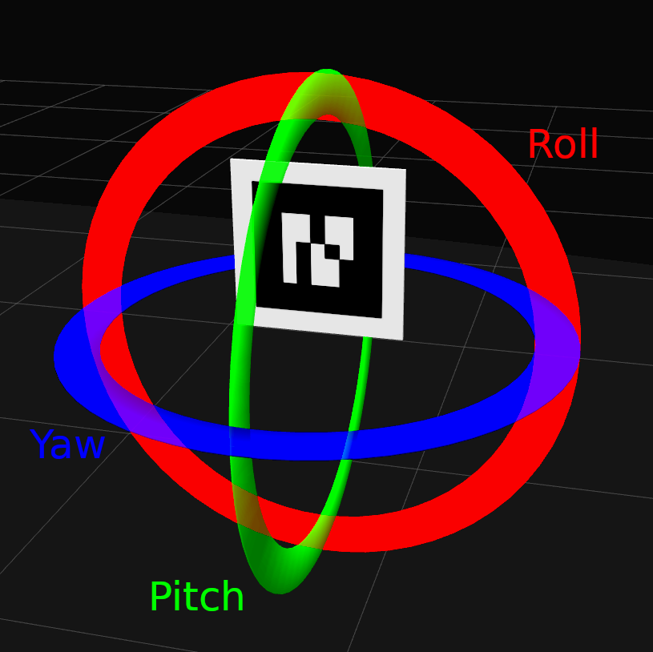

Advanced task: AR Remote Control¶
Now we will explore the possibilities of AR markers a little further by implementing an AR marker based steering wheel. By moving an AR marker in front of a laptop webcam, we will be remotely controlling a Robotont robot.
Your task is to use the skills learnt so far to write a program that listens to messages on the ar_pose_marker topic and uses the orientation information of an AR marker to determine what kind of a Twist message to publish to the cmd_vel topic.
You can use any components of the orientation information that you wish to build your steering wheel, but one option is to make the pitch movement of the marker correspond to forward-backward motion of the robot, and the roll movement to control the rotation of the robot.
{kind=link}
To refresh your memory on AR markers, their orientation info and quaternions, refer back to AR Markers, specifically the Orientation section.
How to convert quaternions to Euler angles?¶
Working with quaternions to control a robot’s speed is inconvenient, since it is hard to discern any kind of pattern in their values when moving the AR marker in front of the camera. To control the robot, we need to convert the orientation of the marker into linear and angular speed, but it is hard to do if we cannot be sure what is the range of the values we wish to convert. This is why it is very beneficial to convert the quaternions to Euler angles.
To convert quaternions to Euler angles in Python code, the tf library, specifically its transformations module can be used. It includes a function euler_from_quaternion() which takes as input a quaternion and outputs a list of Euler angles. A simple usage example of tf.transformations.euler_from_quaternion() can be seen below.
import tf
def callback(data):
'''
Callback for a ROS subscriber subscribing to ar_pose_marker
'''
for marker in data.markers:
marker_ori = (
marker.pose.pose.orientation.x,
marker.pose.pose.orientation.y,
marker.pose.pose.orientation.z,
marker.pose.pose.orientation.w)
euler = tf.transformations.euler_from_quaternion(marker_ori)
roll = euler[0]
yaw = euler[1]
pitch = euler[2]
Step 1: Make the robot move forward¶
Using the code snippet provided above, use one of the Euler angles (either roll, pitch or yaw) of the marker and convert it to linear speed to make the robot move forward. Make it so the robot’s speed is dependant on the size of the marker’s angle.
Step 2: Add backwards movement¶
Sometimes you might need to drive backwards. Make it so that when the marker is tilted the opposite way, the robot moves backwards.
Step 3: Make the robot turn¶
Now that the robot is capable of moving forwards and backwards, it is time to take another component from the Euler angles and convert the angle to angular speed in order to make the robot turn either left or right, depending on the orientation of the marker.